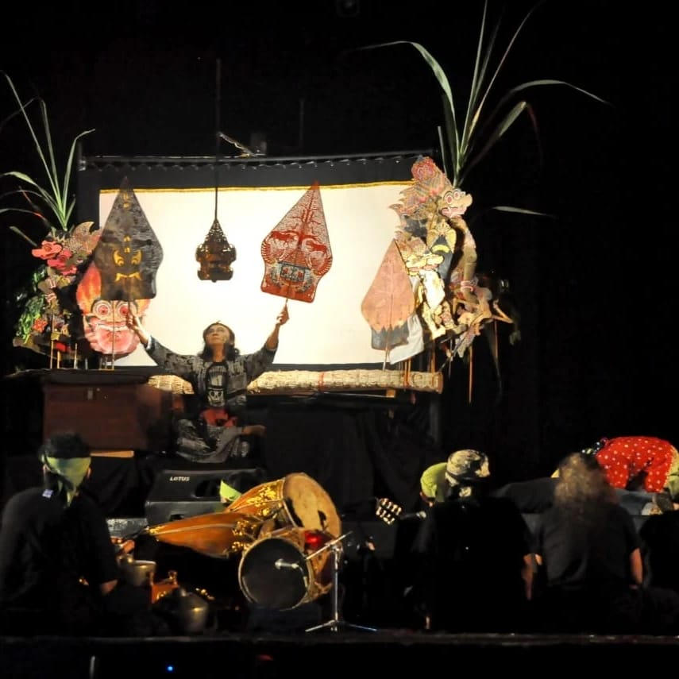
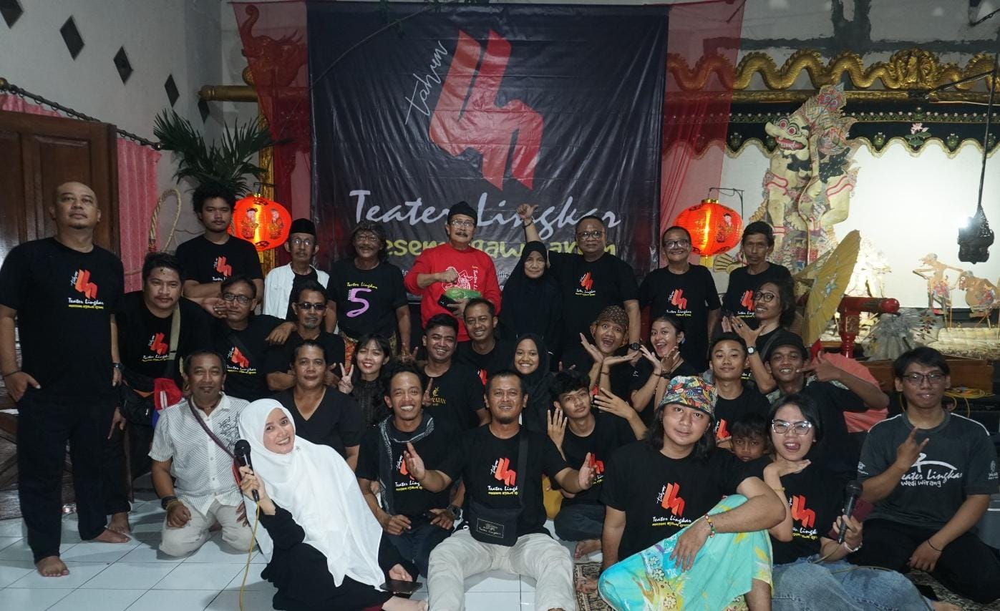

Teater Lingkar adalah sebuah kelompok seni teater yang berkedudukan di Semarang, Jawa Tengah, Indonesia. Teater ini dirintis oleh Mas Ton, dan mulai mempertunjukan karyanya 4 Maret 1989. Sejak berdiri sampai sekarang, Teater Lingkar telah memproduksi puluhan pertunjukan, baik naskah sendiri maupun naskah dari penulis luar negeri, dan memenangi sejumlah kompetisi.
Teater Lingkar Semarang secara konsisten menghasilkan pertunjukan yang diakui secara kritis dan telah mendapatkan pengakuan serta penghargaan di tingkat nasional dan internasional. Komitmen mereka terhadap keunggulan artistik menjadikan mereka sebagai salah satu grup teater terkemuka di Indonesia
Teater Lingkar Semarang memiliki tujuan utama untuk mengedukasi masyarakat tentang senni teater, memperkenalkan berbagai jenis teater, serta menyampaikan pesan-pesan yang relevan dengan kondisi sosial dan budaya saat ini melalui karya-karya teater. Filosofi yang dipegang teguh oleh Teater Lingkar Semarang adalah bahwa teater bukan hanya sekedar pertunjukan, tetapi juga merupakan sarana untuk berbagi pengalaman, menyampaikan pesan moral, dan merangsang pikiran.
Sindhu Laras Bocah
Sanggar Sindhu Laras Bocah merupakan sebuah kelompok yang ditujukan untuk anak-anak agar dapat menumbuhkembangkan seni tradisional lewat pengenalkan Gamelan Karawitan dan Pendalangan agar tetap mencintai seni warisan budaya Indonesia khususnya Jawa.

Wayang Kulit
Pelestarian nilai-nilai budaya adalah salah satu misi yang sedang diemban oleh Teater Lingkar, dengan secara rutin setiap malam jum'at kliwon menyelenggarakan pagelaran wayang kulit di Taman Budaya Raden Saleh (TBRS) Jalan Sriwijaya No. 29 Semarang.
Tari
Tari dalam sanggar Teater Lingkar sendiri merupakan sebuah seni gerak ekspresif yang indah serta dapat mempengaruhi perasaan manusia. Memiliki irama dan diiringi oleh bunyi-bunyian berupa gamelan, musik, serta alat musik lain.

Teater
Teater di sanggar seni Teater Lingkar adalah salah satu pertunjukan yang menggabungkan drama, musik, dan juga tarian. Sanggar Teater Lingkar juga mengembangkan genre teater musikal sebagai bagian untuk mereka memperkaya dalam memajukan seni pertunjukan lokal. Untuk memproduksi suatu teater musikal, sanggar menyediakan pelatihan seperti teknik vokal, koreografi, akting dan juga gerak punggung.
Karawitan
Karawitan adalah salah satu jenis musik tradisional nusantara seperti seni gamelan dan seni suara yang bertangga nada slendro dan pelog. Karawitan menjadi salah satu kegiatan pokok yang rutin dilakukan oleh Teater Lingkar dalam kegiatan mengembangkan dan melestarikan seni tradisional terutama di bagian seni musik Nusantara.